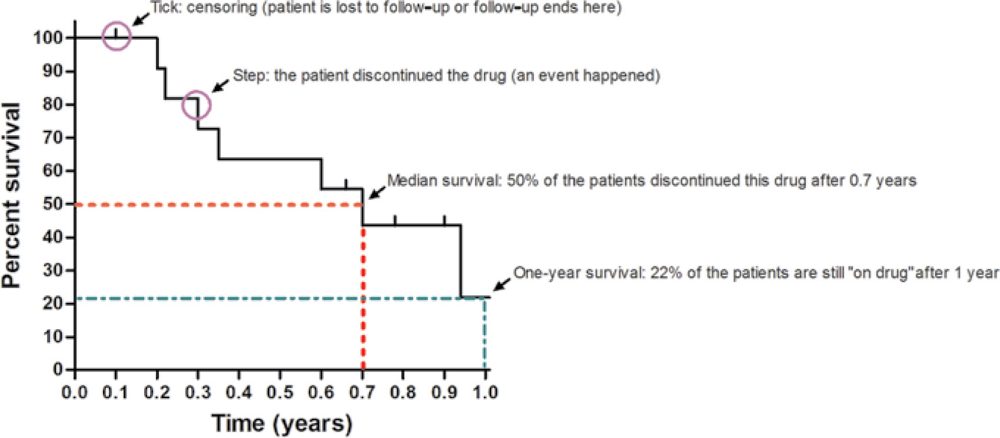

Regressions 3: Survival Analysis
Topic: Introduction to survival analysis methods, including Kaplan Meier curves and the Cox proportional hazards model, and interpretation of hazard ratios.
Introduction
Survival analysis is a set of methods used when ‘time to an event’ is of primary interest. A typical example is comparing time to death over an X-year period after a given event, or estimating time to hospital-readmission within 30-days. These methods are particularly powerful because they can accommodate censored (i.e. missing) data. Survival analysis can get quite complex and consultation with a statistician is highly recommended.
Two outcome variables are required for survival analyses, a binary variable indicating whether or not the event of interest occurred, and a continuous variable describing the follow-up time (e.g. in hours, days, years, etc.). The starting point of the follow-up time must be defined and consistent for all patients. Follow up time ends if 1) the patient has the event, 2) the patient is lost to follow up (i.e., patient is censored), 3) the data collection period ends. Notably, the follow-up time must be a time during which the individual is ‘at risk’ of having the outcome. For example, if the event of interest is re-admission to hospital, follow-up time must start when the patient is discharged from their original admission, and not during the first hospital admission.
Can’t I use Linear or Logistic Regression?
Survival times are a continuous outcome, so it might seem like linear regression is an appropriate method to use. However, when data are censored (i.e., person lost to follow-up before the event occurs), you would have to either 1) remove the participant from the analysis since they did not have the event, or 2) include the available time, which is shorter than the actual time-to-event for that patient. Neither choice is ideal. The first option would result in a biased sample since all participants without the event would be removed. The second option would result in an average survival time that would be under-estimated because we do not know the full time for all patients. Therefore, linear regression will give biased results.
How about using logistic regression to assess the binary variable (whether or not the participant had the event)? This method is also inappropriate because there are variable lengths of follow up time. Consider an extreme example where investigators follow healthy patients over their entire lives until death and follow terminally-ill cancer patients for a single day. If logistic regression was used to analyze this data, it would show that terminal cancer increases the odds of survival, a nonsensical conclusion.
Survival Analysis
Survival analysis is a set of methods used when time to an event is of primary interest. Survival analysis concerns itself with three related functions (see Harrell (2015) for more details):
The Survival Function, S(t), is the probability of being event-free at time t; that is, the probability that the event will not occur at least until time t.
The Cumulative Event Function, F(t), is the probability that an event occurs by time t; this is the complement of the survival function, i.e. F(t)=1 – S(t)
The Hazard Function, \(\lambda\)(t), is the instantaneous event rate (or hazard rate) for participants who have not experienced the event yet; that is, the probability of the event happening in a very short time interval, assuming the event has not yet occurred.
Kaplan-Meier Curves
Kaplan-Meier curves are used to plot the survival function, S(t), for one or more groups of interest over a specified time period. The Kaplan-Meier estimator assesses the probability of being event-free in a given amount of time. This method cannot control or take into account the effects of other covariates on the outcome of interest. The figure below shows the typical components of a Kaplan-Meier curve, for a single group of patients where the event of interest is discontinuation of a drug.

Image source: https://doi.org/10.1038/jid.2015.171Plotting multiple curves for different treatment groups can allow for easy visual comparison of differences in survival probabilities. A log rank test can be used to test the null hypothesis that the Kaplan-Meier curves are equal at all time points. Rejecting the null hypothesis from a log rank test means there is evidence that there is at least 1 time point where the survival curves differ.
The Hazard Ratio & The Proportional Hazards Assumption
As indicated above, the hazard function is the probability of the event occurring in a small period of time. Assume for a moment that we had the hazard functions for two groups of patients, group A and group B, we could compare the hazard function of one group to the other group by taking the ratio of the two functions, to give us the hazard ratio (HR).
\[ HR(t) = \frac{\lambda_A(t)}{\lambda_B(t)} \]
The hazard ratio (HR), is dependent on time, however, if the hazard functions being compared are proportional over time, then HR will be constant over time and the effect of being in group A versus B can be summarized by a single number, namely the HR. This is known as the proportional hazards assumption and is the basis for the Cox Proportional Hazards Model.
Cox Proportional Hazards Model
The Cox proportional hazards model is a regression analysis that allows us to estimate hazard ratios for survival data while controlling for the effects of multiple covariates. This method is related to Linear Regression and Logistic Regression and readers unfamiliar with regression techniques should read these topics first.
Under the proportional hazards assumption, a Cox proportional hazards (or Cox PH) model assumes that the log hazard ratio can be expressed as a linear function of the covariates:
\[ log(HR) = \beta_1X_1 + ... + \beta_nX_n \]
The coefficient \(\beta\) is the change in the log-hazard ratio for a one-unit increase in the covariate X. To interpret model results as hazard ratios we must exponentiate the coefficients (i.e., e\(\beta\)). Hazard ratios can be interpreted as follows:
HR<1 means that a one unit increase in the covariate is associated with lower risk and longer survival times, controlling for other covariates. For example, a Hazard Ratio of 0.5 means that the estimated short term event risk for participants with the covariate is 50% of the risk for patients without the covariate.
HR>1 means that a one unit increase in the covraiate is associated with higher risk and shorter survival times. For example, a Hazard Ratio of 2 means that the estimated short term event risk for participants with the covraiate is two times greater than the risk for patients without the covraiate.
HR= 1 means that the predictor is not associated with survival time.
References and further reading
Bland JM, Altman DG. Survival probabilities (the Kaplan-Meier method). Bmj. 1998 Dec 5;317(7172):1572-80.
Harrell, F. . Regression modeling strategies: With Applications to Linear Models, Logistic and Ordinal Regression, and Survival Analysis. Second edition. Springer; 2015.
Schober P and Vetter TR. Survival analysis and interpretation of time-to-event data: the tortoise and the hare. Anesthesia and analgesia, 127(3):792.
Vittinghoff E, Glidden DV, Shiboski SC, McCulloch CE. Survival Analysis. In Regression methods in biostatistics. Second edition. Springer; 2012